Prof. Dr. Amr Attia speaks at SHARE Kazakhstan in Almaty on 24 and 25 November. Read his profile
Prof. Dr. Amr Attia is Board Chairman of SHARE Egypt 2026, at the Grand Egyptian Museum on 13 and 14 December. News and events
Projects
From regional visions to the Holy Sites.
Press play to watch the practice grow from Cairo across the region. Drag to turn the map and click a pin to open a project.
Skip the map, go to the project list
Map of 186 projects across Egypt, Saudi Arabia and the region. The full list of projects follows below the map.
2026
19642026
Expertise
Every place has its own rhythm. Every challenge its own context.
Our work crosses planning, design and heritage, and each project brings together the best-fit minds from PUD's network of planners, architects, economists and specialists.
 Somou Boulevard, New CairoMostakbal City, New Cairo · 2026
Somou Boulevard, New CairoMostakbal City, New Cairo · 2026 Jabal Thabeer Park (Mina, Makkah)Mina, Makkah · 2025
Jabal Thabeer Park (Mina, Makkah)Mina, Makkah · 2025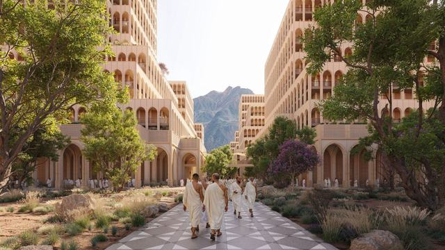
Kidana Al Khaif (Mina, Muzdalifah and Arafat)Makkah (Mina, Muzdalifah, Arafat) · 2024-2026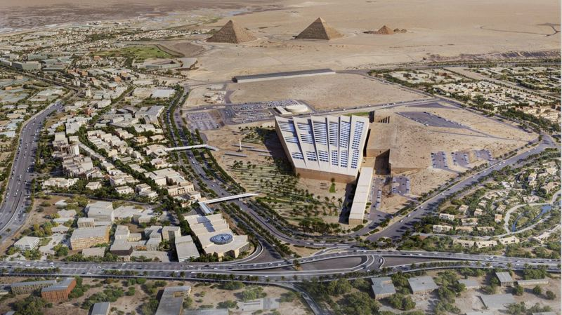
Pyramids Plateau Destination Master PlanGiza · 2024-2025 AlUla Strategic Framework PlanAlUla · 2022
AlUla Strategic Framework PlanAlUla · 2022 Golden Gate, New CairoNew Cairo · 2020-2021
Golden Gate, New CairoNew Cairo · 2020-2021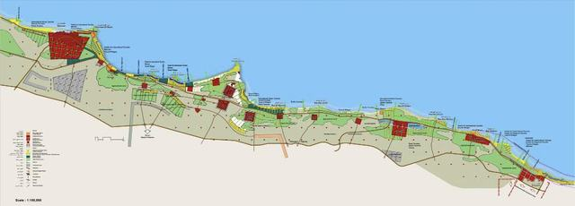
Regional Vision for the North Coast and Tourism Development Master Plan for Fuka-MatrouhFuka-Matrouh sub-region, North Coast · 2011 Marina Matrouh Tourist CentreMarsa Matrouh, North Coast · 1994-2004
Marina Matrouh Tourist CentreMarsa Matrouh, North Coast · 1994-2004 Hilton Dahab Village HotelDahab, Sinai · 1991
Hilton Dahab Village HotelDahab, Sinai · 1991 Marina El AlameinNorth Coast · 1985-1997
Marina El AlameinNorth Coast · 1985-1997 Tut Amun Village Hotel and ResortAswan · 1981
Tut Amun Village Hotel and ResortAswan · 1981 Cairo Media CityGiza · 2026
Cairo Media CityGiza · 2026 Jorhum DestinationMakkah · 2026
Jorhum DestinationMakkah · 2026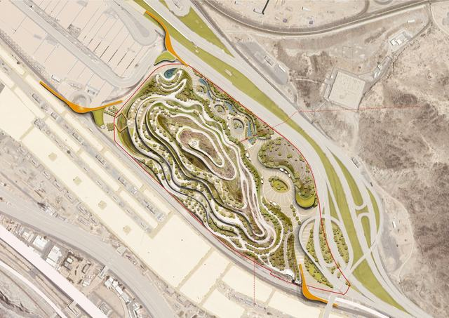
Muzdalifah ParkMuzdalifah, Makkah · 2026 Majar Al Kabsh Pre-Concept DesignMina, Makkah · 2025
Majar Al Kabsh Pre-Concept DesignMina, Makkah · 2025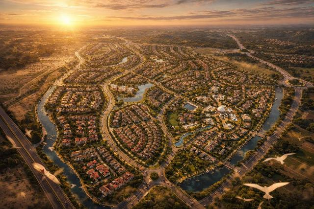
Massoumbou-Diwom Vision Master PlanMassoumbou-Diwom (Douala area) · 2025 New Administrative Capital: Strategic Advisory, Phases 2 to 4New Administrative Capital · 2025
New Administrative Capital: Strategic Advisory, Phases 2 to 4New Administrative Capital · 2025 Port Ghalib Master PlanMarsa Alam · 2025
Port Ghalib Master PlanMarsa Alam · 2025 Yanbu, Umluj, Al Wajh and Duba Sub-Regional Plan (YUWDDA)Yanbu, Umluj, Al Wajh and Duba (Red Sea coast) · 2025
Yanbu, Umluj, Al Wajh and Duba Sub-Regional Plan (YUWDDA)Yanbu, Umluj, Al Wajh and Duba (Red Sea coast) · 2025 Al Mashaaer Al Mugaddassah Master PlanMakkah (Mina, Muzdalifah, Arafat) · 2024-2025
Al Mashaaer Al Mugaddassah Master PlanMakkah (Mina, Muzdalifah, Arafat) · 2024-2025 Al Rabita Pre-Concept Design CompetitionMakkah · 2024
Al Rabita Pre-Concept Design CompetitionMakkah · 2024 Fawaz Alhokair Beachfront Residence, DubaiDubai · 2024
Fawaz Alhokair Beachfront Residence, DubaiDubai · 2024 Fawaz Alhokair Estate, RiyadhRiyadh · 2024
Fawaz Alhokair Estate, RiyadhRiyadh · 2024 Riyadh Plan: Stakeholder Engagement PlanRiyadh · 2024
Riyadh Plan: Stakeholder Engagement PlanRiyadh · 2024 La Vista Town, New CairoNew Cairo · 2023
La Vista Town, New CairoNew Cairo · 2023 Ramla Concept Master PlanNorth Coast · 2023
Ramla Concept Master PlanNorth Coast · 2023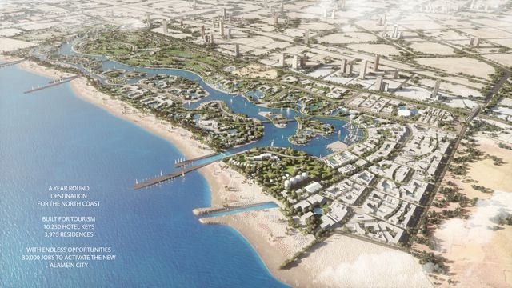
Al Alamein Riviera Vision Master PlanNorth Coast (New Alamein) · 2022 Architectural Design Guidelines for Najran and the Northern Border RegionNajran and the Northern Border Region · 2022
Architectural Design Guidelines for Najran and the Northern Border RegionNajran and the Northern Border Region · 2022 Madaar Ras El Hekma (Azha Ras Al Hekma)Ras El Hekma, North Coast · 2022
Madaar Ras El Hekma (Azha Ras Al Hekma)Ras El Hekma, North Coast · 2022 NEOM Hospital Landscape Conceptual MasterplanTabuk (NEOM) · 2022-2023
NEOM Hospital Landscape Conceptual MasterplanTabuk (NEOM) · 2022-2023 Abu Qir City and Port ExtensionAbu Qir, Alexandria · 2021
Abu Qir City and Port ExtensionAbu Qir, Alexandria · 2021 Gargoub New Port CityGargoub, Matrouh · 2021
Gargoub New Port CityGargoub, Matrouh · 2021 Green Pearl Concept Master Plan Competition (Prime Dubai)Dubai · 2021
Green Pearl Concept Master Plan Competition (Prime Dubai)Dubai · 2021 Heliopark Concept MasterplanNew Cairo · 2021
Heliopark Concept MasterplanNew Cairo · 2021 Project Line Concept Master Plan (Al Khafji)Al Khafji · 2021
Project Line Concept Master Plan (Al Khafji)Al Khafji · 2021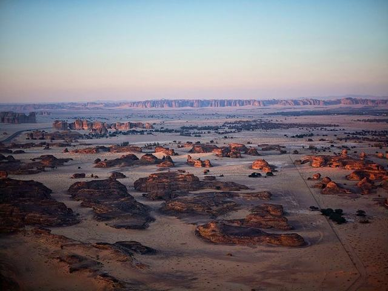
Sharaan Nature Reserve Master PlanAlUla · 2021-2022 Simaisma Beach and Lusail IslandsLusail · 2021
Simaisma Beach and Lusail IslandsLusail · 2021 Al Soudah Master Plan CompetitionAseer Region · 2020
Al Soudah Master Plan CompetitionAseer Region · 2020 Elysium Mixed Use DevelopmentShorouq City · 2020
Elysium Mixed Use DevelopmentShorouq City · 2020 Khaybar Heritage Area: Development Brief for the Master PlanKhaybar, AlUla · 2020
Khaybar Heritage Area: Development Brief for the Master PlanKhaybar, AlUla · 2020 Makkah Township Vision Master PlanMakkah · 2020
Makkah Township Vision Master PlanMakkah · 2020 Al Hamdaniyah Investment Lands Concept Master Plan, JeddahJeddah · 2019
Al Hamdaniyah Investment Lands Concept Master Plan, JeddahJeddah · 2019 AlUla County Infrastructure Master PlanAlUla · 2019-2020
AlUla County Infrastructure Master PlanAlUla · 2019-2020 King Abdulaziz Road Investment Land Concept Master Plan, DhahranDhahran · 2019
King Abdulaziz Road Investment Land Concept Master Plan, DhahranDhahran · 2019 Taj Al RiyadhRiyadh · 2018-2019
Taj Al RiyadhRiyadh · 2018-2019 Al Jawhara ResidenceJeddah · 2017-2018
Al Jawhara ResidenceJeddah · 2017-2018 Jazan City for Primary and Downstream IndustriesJazan · 2017-2018
Jazan City for Primary and Downstream IndustriesJazan · 2017-2018 Strategic Plan for the Optimisation of Saudi Railway Organization's Land and Property AssetsSaudi Arabia · 2017-2018
Strategic Plan for the Optimisation of Saudi Railway Organization's Land and Property AssetsSaudi Arabia · 2017-2018 Branding Manual and Technical Specifications for the Commercial Registry and Notary OfficesEgypt · 2016
Branding Manual and Technical Specifications for the Commercial Registry and Notary OfficesEgypt · 2016 Fanarah Tourist ResortJefeira, North Coast · 2016
Fanarah Tourist ResortJefeira, North Coast · 2016 Three Tunnels under the Suez CanalPort Said (Suez Canal) · 2015
Three Tunnels under the Suez CanalPort Said (Suez Canal) · 2015 One Million Affordable Housing Units: Minya Land-Use PlanMinya · 2014
One Million Affordable Housing Units: Minya Land-Use PlanMinya · 2014 Jazan Economic CityJazan · 2013-2016
Jazan Economic CityJazan · 2013-2016 Jeddah City: Regional, Strategic and Local PlansJeddah · 2013-2015
Jeddah City: Regional, Strategic and Local PlansJeddah · 2013-2015 Downtown Cairo RegenerationCairo · 2012
Downtown Cairo RegenerationCairo · 2012 Jeddah Spatial Framework PlanJeddah · 2012
Jeddah Spatial Framework PlanJeddah · 2012 Taif Development Plan (TDP)Taif · 2012
Taif Development Plan (TDP)Taif · 2012 Private Waterfront Property in HurghadaHurghada · 2011
Private Waterfront Property in HurghadaHurghada · 2011 Urban Renewal of the Faculty of Agriculture, Cairo UniversityGiza (Cairo University) · 2010
Urban Renewal of the Faculty of Agriculture, Cairo UniversityGiza (Cairo University) · 2010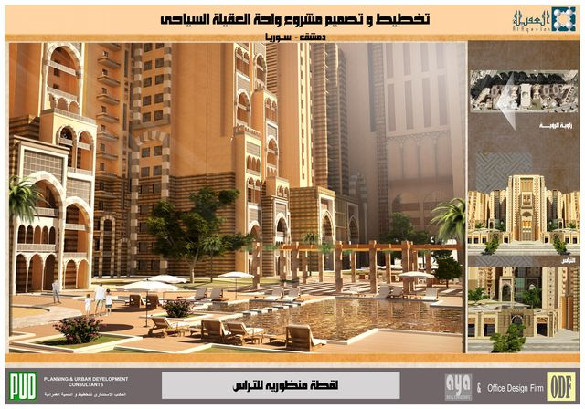
Al Aqeelah OasisDamascus · 2008 Al-Aqeeq MarinaAl Khiran · 2008
Al-Aqeeq MarinaAl Khiran · 2008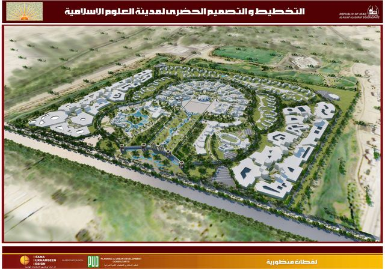
City of Knowledge and University of Islamic SciencesNajaf · 2008 Investors Tourism Village, New DamiettaNew Damietta City · 2008
Investors Tourism Village, New DamiettaNew Damietta City · 2008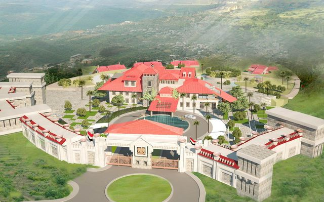
Maria Heights Tourist ComplexHoms · 2008 New Najaf CityNajaf · 2008
New Najaf CityNajaf · 2008 Om El Baneen OasisNajaf · 2008
Om El Baneen OasisNajaf · 2008 Al-Fayrouz Tower, Al SalmiyaAl Salmiya · 2008
Al-Fayrouz Tower, Al SalmiyaAl Salmiya · 2008 Olympic Plaza Tower, MaadiMaadi, Cairo · 2008
Olympic Plaza Tower, MaadiMaadi, Cairo · 2008 Rotana Cafe, ZamalekZamalek, Cairo · 2008
Rotana Cafe, ZamalekZamalek, Cairo · 2008 Alex Gate Mixed Use DevelopmentAlexandria · 2006
Alex Gate Mixed Use DevelopmentAlexandria · 2006 Palm Beach Resort Landscape DesignRiyadh · 2006
Palm Beach Resort Landscape DesignRiyadh · 2006 Rotana Offices and Studios, Nile PlazaGarden City, Cairo · 2005
Rotana Offices and Studios, Nile PlazaGarden City, Cairo · 2005 Private Villas and Gardens, EgyptCairo · 2005-2008
Private Villas and Gardens, EgyptCairo · 2005-2008 Arab World Participation Galleries, Frankfurt Book FairFrankfurt · 2004
Arab World Participation Galleries, Frankfurt Book FairFrankfurt · 2004 Marina Matrouh Tourist Centre, Phase 3Marsa Matrouh, North Coast · 2004
Marina Matrouh Tourist Centre, Phase 3Marsa Matrouh, North Coast · 2004 Pyramisa Apartment Hotel and Shopping Mall, HurghadaHurghada · 2003
Pyramisa Apartment Hotel and Shopping Mall, HurghadaHurghada · 2003 The Royal OasisSheikh Zayed City · 2001
The Royal OasisSheikh Zayed City · 2001 Marina Matrouh Tourist Centre, Phase 2Marsa Matrouh, North Coast · 2000
Marina Matrouh Tourist Centre, Phase 2Marsa Matrouh, North Coast · 2000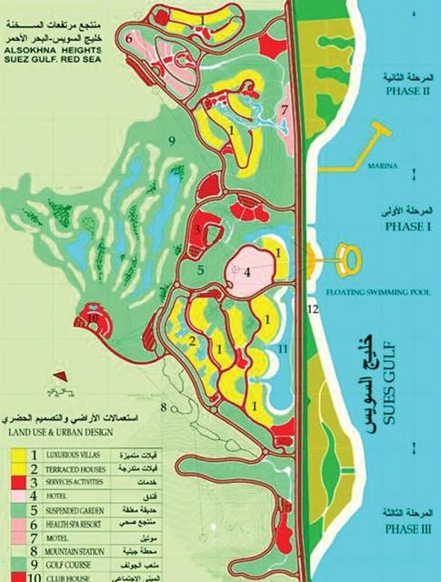
Sukhna Heights Tourist ResortAin El Sokhna, Gulf of Suez · 1999 Ain El Sokhna Tourist CentreAin El Sokhna, Gulf of Suez · 1998
Ain El Sokhna Tourist CentreAin El Sokhna, Gulf of Suez · 1998 Al Hashimi, Al Kattan, Al Shirbini and Al Zahem Hotels and Residential ComplexesMadinah · 1998
Al Hashimi, Al Kattan, Al Shirbini and Al Zahem Hotels and Residential ComplexesMadinah · 1998 Marina LatakiaLatakia · 1997
Marina LatakiaLatakia · 1997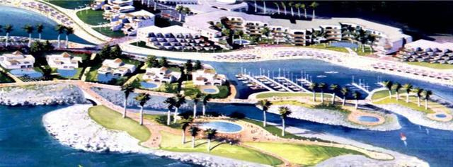
Marina Latakia Tourist ComplexLatakia · 1993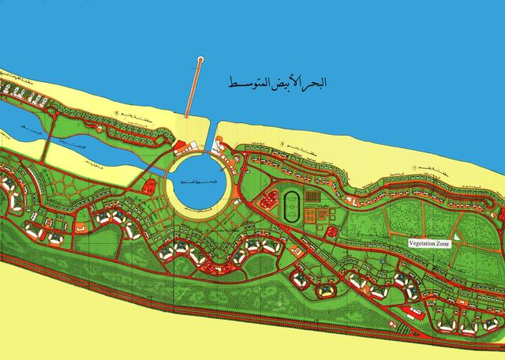
Marina El Alamein Tourist Centre: Concept Master PlanNorth Coast · 1986 Structure Planning for the North West Coast RegionNorth West Coast · 1982
Structure Planning for the North West Coast RegionNorth West Coast · 1982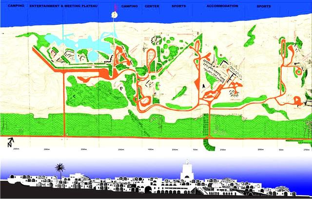
Marakia Tourist VillageNorth West Coast (km 50-52 west of Alexandria) · 1981-1983 Tourism Development Planning for the North West Coast RegionNorth West Coast · 1978
Tourism Development Planning for the North West Coast RegionNorth West Coast · 1978 Organ Transplant Centre, Nasser Institute for Research and TreatmentGreater Cairo
Organ Transplant Centre, Nasser Institute for Research and TreatmentGreater Cairo Fawaz Alhokair Diriyah Farm and CompoundRiyadh
Fawaz Alhokair Diriyah Farm and CompoundRiyadh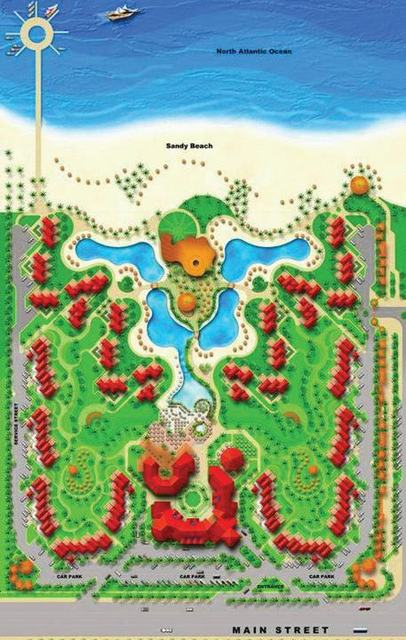
Dream Beach Resort, The GambiaAtlantic coast Green Egypt PackhouseGiza
Green Egypt PackhouseGiza Fragrance Factory (Greiss), 6th of October City6th of October CityFawaz Alhokair Residence Extension, RiyadhRiyadh · 2024Badya Mixed Use and Gate6th of October City · 2022ETAP Tourism DevelopmentRas El Hekma · 2022Palm Hills Golf Views Apartments6th of October City · 2022Al Faw Heritage Area Pre-Concept Master PlanRiyadh Region · 2020-2021Al Ras Al Abiyad Pre-Concept Master PlanMadinah Region · 2020-2021Black Pegasus Design CompetitionAlUla · 2020King Salman Bay Mixed Use DevelopmentJeddah · 2020Master Planning Advisory Services for the Royal Commission for AlUlaAlUla · 2020New Jeddah Downtown Master PlanJeddah · 2020-2021Project Elephant Pre-Concept Master PlanEmpty Quarter · 2020-2021Project Oval Design CompetitionJabal Al Lith · 2020Project Raha Water ParkJeddah · 2020-2021Royal Commission for AlUla Advisory ServicesAlUla · 2019Royal Commission for Makkah City and Holy Sites Advisory ServicesMakkah · 2019Planning Framework for Residential Density Improvement in Dammam, Riyadh and JeddahDammam, Riyadh and Jeddah · 2017-2018Rua Al Haram Concept Master Planning CompetitionMakkah · 2017Al-Rabwa Resettlement ProgrammeJeddah · 2013Cairo Airport CityCairo · 2012Jeddah Stormwater Drainage ProgrammeJeddah · 2011-2012Asmaak Plaza, ZamalekZamalek, Cairo · 2011Castle Zaman HotelTaba-Nuweiba coast, South Sinai · 2011Cairo Gate Master PlanNasr City, Cairo · 2010Reflections Mixed Use ComplexSheikh Zayed City · 2010Abo Dabbab Marine Field StationMarsa Alam · 2009Fao International Marine Port CityFao · 2009Green Star Hotels InitiativeEgypt · 2009Homs International Airport CityHoms · 2009Master Plan of the Faculty of Agriculture Campus, Cairo UniversityGiza (Cairo University) · 2009Reflections (Cleopatra Water Courts)Sheikh Zayed City · 2009Students' Affairs Complex, Faculty of Agriculture, Cairo UniversityGiza (Cairo University) · 2009Tehran Laleh HotelTehran · 2008Industrial Free Zone Development, KuwaitKuwait · 2008Jewellery Factory and Headquarters, 6th of October City6th of October City · 2008Residential Complex, West Arabella, New CairoWest Arabella, New Cairo · 2008El-Khamayel City6th of October City · 2007Strategic Planning for Mansoura CityMansoura · 2007Strategic Planning for Tanta CityTanta · 2007Pastry Factory, Obour CityObour City · 2007Alex Gate Master Plan (Alexandria Growth Pole Project)Alexandria · 2006Farm House, Cairo-Alexandria Desert RoadCairo-Alexandria Desert Road · 2006Residential Compound, Al-Thawra Al-Khadra, Cairo-Alexandria Desert RoadCairo-Alexandria Desert Road · 2006Nahdet El Arab Tourism Complex, Phase 2Ain El Sokhna · 2003Strategic Planning for Rural Settlements in EgyptEgypt · 2003Directive Plans for Rural Settlements in EgyptEgypt · 2002Urban Renewal around Magra El Oyoun (Aqueducts), Historic CairoHistoric Cairo · 2002Faculty of Medicine Expansion Project, Ain Shams University (Second Stage)Abbassiya, Cairo · 2000Nahdet El Arab Tourism ComplexAin El Sokhna · 1997South Jahrah Residential CommunityJahra · 1996Al Kattan Hotel, Commercial and Residential Complex (Concept Design)Madinah · 1995Al-Hashimi Hotel, Commercial and Residential Complex (Concept Design)Madinah · 1995Al-Shirbini Commercial and Residential Complex (Concept Design)Madinah · 1995Al-Zahem Hotel, Commercial and Residential Complex (Concept Design)Madinah · 1995Basharia Hotel, Commercial and Residential Complex (Concept Design)Madinah · 1994Crystal Asfour Factory and Headquarters ExtensionCairo · 1994Faculty of Medicine, Ain Shams University: Concept Master Plan (Phase 1)Abbassiya, Cairo · 1994Hurghada Apartments Hotel and Shopping MallHurghada · 1994Marina El Alamein Tourist Centre (Phase 3): VeniciaNorth Coast · 1992Continental Savoy Hotel and Shopping ComplexCairo · 1991Rivoli Commercial Complex and HotelCairo · 1988Residential, Administrative and Shopping Complex, Tahrir StreetCairo · 1987West Alexandria Regional Plan (Maxx to km 34)West of Alexandria · 1984The Nile Twin TowersCairo · 1980Al-Salam Oasis Master PlanningCairo-Alexandria desert road · 1979El-Shams City Master Planning, AssiutAssiut · 1979El-Shams City Masterplan (El-Kahira and El-Nasr Companies for Housing)Egypt · 1979The Military Officers ClubAbu Dhabi · 1979Housing and Offices Complex in MaadiMaadi, Cairo · 1978Shopping Mall, Offices and Multi-Storey Garage in KuwaitKuwait · 1976Al-Jahraa Housing ProjectJahra · 1975Al-Ashish Urbanized CommunitiesKuwait · 1974Al-Tahrir Bus TerminalsCairo · 1972Regional and Urban Planning for Assiut GovernorateAssiut · 1972Potatoes Cold Stores in Minya and Kafr El-ZayatMinya and Kafr El-Zayat · 1970Lecture Halls and Research Institute, Ain Shams UniversityCairo · 1969Cotton Ginning Factories for El-Wadi and Delta CompaniesEgypt · 1964Saudi Import Company Headquarters, JeddahJeddahScience and Space Complex, RiyadhRiyadhHoms ClubHomsElegect Company Headquarters, CairoCairoBaker Atlas Plant, MatrouhMarsa MatrouhHostess Factory Extensions, 10th of Ramadan City10th of Ramadan CityBank of Alexandria Branches (Cairo, Tanta, Mahalla, Alexandria)Cairo, Tanta, Mahalla and AlexandriaIndustrial Park Master Plans, 6th of October City and Ismailia6th of October City and IsmailiaResidential Compound, 6th of October City6th of October CityNasser Memorial Civic CentreEgyptPlanning of Luxor City and Its RegionLuxorObour Memorial and Museum, IsmailiaIsmailiaEl-Arish City Master PlanningEl-ArishResidential Quarters of Aluminium City, Nag HammadiNag HammadiSuez Canal Bank Headquarters, CairoCairoEl-Bustan Hotel, Recreational and Offices BuildingCairoHotel and Administrative Complex, Kasr El-Nil Street, CairoCairoIndustrial Union BuildingEgypt
Fragrance Factory (Greiss), 6th of October City6th of October CityFawaz Alhokair Residence Extension, RiyadhRiyadh · 2024Badya Mixed Use and Gate6th of October City · 2022ETAP Tourism DevelopmentRas El Hekma · 2022Palm Hills Golf Views Apartments6th of October City · 2022Al Faw Heritage Area Pre-Concept Master PlanRiyadh Region · 2020-2021Al Ras Al Abiyad Pre-Concept Master PlanMadinah Region · 2020-2021Black Pegasus Design CompetitionAlUla · 2020King Salman Bay Mixed Use DevelopmentJeddah · 2020Master Planning Advisory Services for the Royal Commission for AlUlaAlUla · 2020New Jeddah Downtown Master PlanJeddah · 2020-2021Project Elephant Pre-Concept Master PlanEmpty Quarter · 2020-2021Project Oval Design CompetitionJabal Al Lith · 2020Project Raha Water ParkJeddah · 2020-2021Royal Commission for AlUla Advisory ServicesAlUla · 2019Royal Commission for Makkah City and Holy Sites Advisory ServicesMakkah · 2019Planning Framework for Residential Density Improvement in Dammam, Riyadh and JeddahDammam, Riyadh and Jeddah · 2017-2018Rua Al Haram Concept Master Planning CompetitionMakkah · 2017Al-Rabwa Resettlement ProgrammeJeddah · 2013Cairo Airport CityCairo · 2012Jeddah Stormwater Drainage ProgrammeJeddah · 2011-2012Asmaak Plaza, ZamalekZamalek, Cairo · 2011Castle Zaman HotelTaba-Nuweiba coast, South Sinai · 2011Cairo Gate Master PlanNasr City, Cairo · 2010Reflections Mixed Use ComplexSheikh Zayed City · 2010Abo Dabbab Marine Field StationMarsa Alam · 2009Fao International Marine Port CityFao · 2009Green Star Hotels InitiativeEgypt · 2009Homs International Airport CityHoms · 2009Master Plan of the Faculty of Agriculture Campus, Cairo UniversityGiza (Cairo University) · 2009Reflections (Cleopatra Water Courts)Sheikh Zayed City · 2009Students' Affairs Complex, Faculty of Agriculture, Cairo UniversityGiza (Cairo University) · 2009Tehran Laleh HotelTehran · 2008Industrial Free Zone Development, KuwaitKuwait · 2008Jewellery Factory and Headquarters, 6th of October City6th of October City · 2008Residential Complex, West Arabella, New CairoWest Arabella, New Cairo · 2008El-Khamayel City6th of October City · 2007Strategic Planning for Mansoura CityMansoura · 2007Strategic Planning for Tanta CityTanta · 2007Pastry Factory, Obour CityObour City · 2007Alex Gate Master Plan (Alexandria Growth Pole Project)Alexandria · 2006Farm House, Cairo-Alexandria Desert RoadCairo-Alexandria Desert Road · 2006Residential Compound, Al-Thawra Al-Khadra, Cairo-Alexandria Desert RoadCairo-Alexandria Desert Road · 2006Nahdet El Arab Tourism Complex, Phase 2Ain El Sokhna · 2003Strategic Planning for Rural Settlements in EgyptEgypt · 2003Directive Plans for Rural Settlements in EgyptEgypt · 2002Urban Renewal around Magra El Oyoun (Aqueducts), Historic CairoHistoric Cairo · 2002Faculty of Medicine Expansion Project, Ain Shams University (Second Stage)Abbassiya, Cairo · 2000Nahdet El Arab Tourism ComplexAin El Sokhna · 1997South Jahrah Residential CommunityJahra · 1996Al Kattan Hotel, Commercial and Residential Complex (Concept Design)Madinah · 1995Al-Hashimi Hotel, Commercial and Residential Complex (Concept Design)Madinah · 1995Al-Shirbini Commercial and Residential Complex (Concept Design)Madinah · 1995Al-Zahem Hotel, Commercial and Residential Complex (Concept Design)Madinah · 1995Basharia Hotel, Commercial and Residential Complex (Concept Design)Madinah · 1994Crystal Asfour Factory and Headquarters ExtensionCairo · 1994Faculty of Medicine, Ain Shams University: Concept Master Plan (Phase 1)Abbassiya, Cairo · 1994Hurghada Apartments Hotel and Shopping MallHurghada · 1994Marina El Alamein Tourist Centre (Phase 3): VeniciaNorth Coast · 1992Continental Savoy Hotel and Shopping ComplexCairo · 1991Rivoli Commercial Complex and HotelCairo · 1988Residential, Administrative and Shopping Complex, Tahrir StreetCairo · 1987West Alexandria Regional Plan (Maxx to km 34)West of Alexandria · 1984The Nile Twin TowersCairo · 1980Al-Salam Oasis Master PlanningCairo-Alexandria desert road · 1979El-Shams City Master Planning, AssiutAssiut · 1979El-Shams City Masterplan (El-Kahira and El-Nasr Companies for Housing)Egypt · 1979The Military Officers ClubAbu Dhabi · 1979Housing and Offices Complex in MaadiMaadi, Cairo · 1978Shopping Mall, Offices and Multi-Storey Garage in KuwaitKuwait · 1976Al-Jahraa Housing ProjectJahra · 1975Al-Ashish Urbanized CommunitiesKuwait · 1974Al-Tahrir Bus TerminalsCairo · 1972Regional and Urban Planning for Assiut GovernorateAssiut · 1972Potatoes Cold Stores in Minya and Kafr El-ZayatMinya and Kafr El-Zayat · 1970Lecture Halls and Research Institute, Ain Shams UniversityCairo · 1969Cotton Ginning Factories for El-Wadi and Delta CompaniesEgypt · 1964Saudi Import Company Headquarters, JeddahJeddahScience and Space Complex, RiyadhRiyadhHoms ClubHomsElegect Company Headquarters, CairoCairoBaker Atlas Plant, MatrouhMarsa MatrouhHostess Factory Extensions, 10th of Ramadan City10th of Ramadan CityBank of Alexandria Branches (Cairo, Tanta, Mahalla, Alexandria)Cairo, Tanta, Mahalla and AlexandriaIndustrial Park Master Plans, 6th of October City and Ismailia6th of October City and IsmailiaResidential Compound, 6th of October City6th of October CityNasser Memorial Civic CentreEgyptPlanning of Luxor City and Its RegionLuxorObour Memorial and Museum, IsmailiaIsmailiaEl-Arish City Master PlanningEl-ArishResidential Quarters of Aluminium City, Nag HammadiNag HammadiSuez Canal Bank Headquarters, CairoCairoEl-Bustan Hotel, Recreational and Offices BuildingCairoHotel and Administrative Complex, Kasr El-Nil Street, CairoCairoIndustrial Union BuildingEgypt